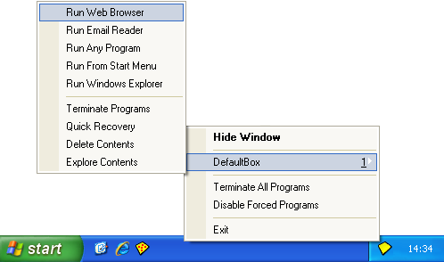

Tray Icon Menu

To invoke commands from the tray icon menu, right-click the Sandboxie tray icon that appears in your system notification area, typically at the lower-right corner of the screen.
Hide Window / Show Window
The first command is Hide Window when the main window of Sandboxie Control is visible. It changes to Show Window when the main window is hidden. This command shows or hides the main window of Sandboxie Control.
Sandbox Sub-Menu
One or more sub-menus appear for each sandbox defined. The default configuration includes only one sandbox named DefaultBox, but more can be added using the Sandbox Menu. Each sub-menu contains the following commands:
-
The Run Web Browser command starts the system (default) Web browser.
Same as Sandbox Menu -> (sandbox) -> Run Sandboxed -> Web Browser.
(Note: If the wrong program starts, see Frequently Asked Questions to fix this.) -
The Run Email Reader command starts the system (default) email reader.
Same as Sandbox Menu -> (sandbox) -> Run Sandboxed -> Email Reader. -
The Run Any Program command displays the Run Any Program dialog box which is similar to the standard Windows Run... dialog box. It can be used to start programs, open documents, and browse folders, all under the supervision of Sandboxie.
Same as Sandbox Menu -> (sandbox) -> Run Sandboxed -> Any Program. -
The Run From Start Menu command displays the Sandboxie Start menu, similar to the standard Windows Start menu. It can be used to start programs and other shortcuts that appear in the start menu and on the desktop. Note that if any programs were installed into the sandbox, the Sandboxie Start menu will include the shortcuts created during the installation.
Same as Sandbox Menu -> (sandbox) -> Run Sandboxed -> From Start Menu. -
The Run Windows Explorer command starts a sandboxed instance of the Windows Explorer. It can be used to navigate folders and start programs, all under the supervision of Sandboxie.
Same as Sandbox Menu -> (sandbox) -> Run Sandboxed -> Windows Explorer. -
The Terminate Programs command stops all programs running in the sandbox.
Same as Sandbox Menu -> (sandbox) -> Terminate Running Programs. -
The Quick Recovery command shows the Quick Recovery window.
Same as Sandbox Menu -> (sandbox) -> Quick Recovery. -
The Delete Contents command shows the Delete Sandbox window.
Same as Sandbox Menu -> (sandbox) -> Delete Contents. -
The Explore Contents command opens an unsandboxed folder view for the contents of the sandbox outside the supervision of Sandboxie. If possible, use the Files And Folders View to browse the contents of the sandbox.
Same as Sandbox Menu -> (sandbox) -> Explore Contents.
Terminate All Programs
The Terminate All Programs command stops all programs running in all sandboxes.
Same as File Menu -> Terminate All Programs.
See also: Terminate All Programs in File Menu.
Disable Forced Programs
The Disable Forced Programs toggle command temporarily disables and re-enables forced sandboxing. See the associated command in the File Menu. Note that unlike the File Menu command, the tray icon command does not show a dialog box to alter the duration of the command. Instead, forced sandboxing will be suspended for the last duration specified, or the default of 10 seconds.
Same as File Menu -> Disable Forced Programs.
See also: Disable Forced Programs in File Menu.
Run As UAC Administrator
The Run As UAC Administrator (not shown in the picture; see File Menu) toggle command tells Sandboxie to ask for elevation to Administrative privileges before starting any programs. This command is only available on Windows when User Account Control (UAC) is in effect, and the user account is not already elevated. If this command is available in the menu, then it is typically necessary to enable it before installing programs into the sandbox, and it is recommended to disable it when that installation is complete.
Same as File Menu -> Run As UAC Administrator.
See also: Run As UAC Administrator in File Menu.
Exit
The Exit command quits Sandboxie Control. Note that merely closing the window (or selecting the Hide Window command) does not quit Sandboxie Control.
Same as File Menu -> Exit.
Go to Sandboxie Control, Help Topics.